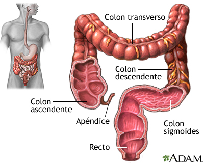

Intestino GruesoEl intestino grueso es la última porción del tubo digestivo, formada por el ciego, el colon, el recto y el canal anal. El intestino delgado se une al intestino grueso en el abdomen inferior derecho a través de la válvula ileocecal. El intestino grueso es un tubo muscular de aproximadamente un metro y medio de largo. La primera parte del intestino grueso se llama ciego. El intestino grueso continúa absorbiendo agua y nutrientes minerales de los alimentos y sirve como área de almacenamiento de las heces. Clica aqui para saber mas Volver |